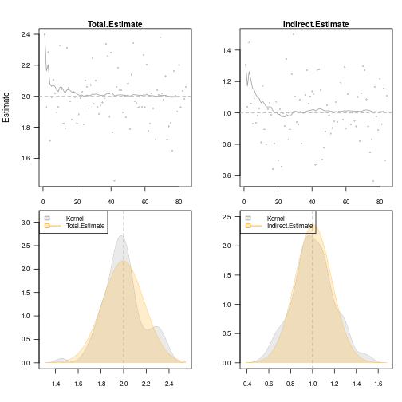

A general implementation of Structural Equation Models with latent variables (MLE, 2SLS, and composite likelihood estimators) with both continuous, censored, and ordinal outcomes (Holst and Budtz-Joergensen (2013) <10.1007/s00180-012-0344-y>). Mixture latent variable models and non-linear latent variable models (Holst and Budtz-Joergensen (2020) <10.1093/biostatistics/kxy082>). The package also provides methods for graph exploration (d-separation, back-door criterion), simulation of general non-linear latent variable models, and estimation of influence functions for a broad range of statistical models.
Installation
install.packages("lava", dependencies=TRUE)
library("lava")
demo("lava")For graphical capabilities the Rgraphviz package is needed (first install the BiocManager package)
# install.packages("BiocManager")
BiocManager::install("Rgraphviz")or the igraph or visNetwork packages
install.packages("igraph")
install.packages("visNetwork")The development version of lava may also be installed directly from github:
# install.packages("remotes")
remotes::install_github("kkholst/lava")Citation
To cite that lava package please use one of the following references
Klaus K. Holst and Esben Budtz-Joergensen (2013). Linear Latent Variable Models: The lava-package. Computational Statistics 28 (4), pp 1385-1453. http://dx.doi.org/10.1007/s00180-012-0344-y
@article{lava,
title = {Linear Latent Variable Models: The lava-package},
author = {Klaus Kähler Holst and Esben Budtz-Jørgensen},
year = {2013},
volume = {28},
number = {4},
pages = {1385-1452},
journal = {Computational Statistics},
doi = {10.1007/s00180-012-0344-y}
}Klaus K. Holst and Esben Budtz-Jørgensen (2020). A two-stage estimation procedure for non-linear structural equation models. Biostatistics 21 (4), pp 676-691. http://dx.doi.org/10.1093/biostatistics/kxy082
@article{lava_nlin,
title = {A two-stage estimation procedure for non-linear structural equation models},
author = {Klaus Kähler Holst and Esben Budtz-Jørgensen},
journal = {Biostatistics},
year = {2020},
volume = {21},
number = {4},
pages = {676-691},
doi = {10.1093/biostatistics/kxy082},
}Examples
Structural Equation Model
Specify structural equation models with two factors
m <- lvm()
regression(m) <- y1 + y2 + y3 ~ eta1
regression(m) <- z1 + z2 + z3 ~ eta2
latent(m) <- ~ eta1 + eta2
regression(m) <- eta2 ~ eta1 + x
regression(m) <- eta1 ~ x
labels(m) <- c(eta1=expression(eta[1]), eta2=expression(eta[2]))
plot(m)Simulation
d <- sim(m, 100, seed=1)Estimation
e <- estimate(m, d)
e
#> Estimate Std. Error Z-value P-value
#> Measurements:
#> y2~eta1 0.95462 0.08083 11.80993 <1e-12
#> y3~eta1 0.98476 0.08922 11.03722 <1e-12
#> z2~eta2 0.97038 0.05368 18.07714 <1e-12
#> z3~eta2 0.95608 0.05643 16.94182 <1e-12
#> Regressions:
#> eta1~x 1.24587 0.11486 10.84694 <1e-12
#> eta2~eta1 0.95608 0.18008 5.30910 1.102e-07
#> eta2~x 1.11495 0.25228 4.41951 9.893e-06
#> Intercepts:
#> y2 -0.13896 0.12458 -1.11537 0.2647
#> y3 -0.07661 0.13869 -0.55241 0.5807
#> eta1 0.15801 0.12780 1.23644 0.2163
#> z2 -0.00441 0.14858 -0.02969 0.9763
#> z3 -0.15900 0.15731 -1.01076 0.3121
#> eta2 -0.14143 0.18380 -0.76949 0.4416
#> Residual Variances:
#> y1 0.69684 0.14858 4.69004
#> y2 0.89804 0.16630 5.40026
#> y3 1.22456 0.21182 5.78109
#> eta1 0.93620 0.19623 4.77084
#> z1 1.41422 0.26259 5.38570
#> z2 0.87569 0.19463 4.49934
#> z3 1.18155 0.22640 5.21883
#> eta2 1.24430 0.28992 4.29195Model assessment
Assessing goodness-of-fit, here the linearity between eta2 and eta1 (requires the gof package)
# install.packages("gof", repos="https://kkholst.github.io/r_repo/")
library("gof")
set.seed(1)
g <- cumres(e, eta2 ~ eta1)
plot(g)
Non-linear measurement error model
Simulate non-linear model
m <- lvm(y1 + y2 + y3 ~ u, u ~ x)
transform(m,u2 ~ u) <- function(x) x^2
regression(m) <- z~u2+u
d <- sim(m,200,p=c("z"=-1, "z~u2"=-0.5), seed=1)Stage 1:
m1 <- lvm(c(y1[0:s], y2[0:s], y3[0:s]) ~ 1*u, u ~ x)
latent(m1) <- ~ u
(e1 <- estimate(m1, d))
#> Estimate Std. Error Z-value P-value
#> Regressions:
#> u~x 1.06998 0.08208 13.03542 <1e-12
#> Intercepts:
#> u -0.08871 0.08753 -1.01344 0.3108
#> Residual Variances:
#> y1 1.00054 0.07075 14.14214
#> u 1.19873 0.15503 7.73233Stage 2
pp <- function(mu,var,data,...) cbind(u=mu[,"u"], u2=mu[,"u"]^2+var["u","u"])
(e <- measurement.error(e1, z~1+x, data=d, predictfun=pp))
#> Estimate Std.Err 2.5% 97.5% P-value
#> (Intercept) -1.1181 0.13795 -1.3885 -0.8477 5.273e-16
#> x -0.0537 0.13213 -0.3127 0.2053 6.844e-01
#> u 1.0039 0.11504 0.7785 1.2294 2.609e-18
#> u2 -0.4718 0.05213 -0.5740 -0.3697 1.410e-19
f <- function(p) p[1]+p["u"]*u+p["u2"]*u^2
u <- seq(-1, 1, length.out=100)
plot(e, f, data=data.frame(u))Simulation
Studying the small-sample properties of a mediation analysis
m <- lvm(y~x, c~1)
regression(m) <- y+x ~ z
eventTime(m) <- t~min(y=1, c=0)
transform(m,S~t+status) <- function(x) survival::Surv(x[,1],x[,2])
plot(m)
Simulate from model and estimate indirect effects
onerun <- function(...) {
d <- sim(m, 100)
m0 <- lvm(S~x+z, x~z)
e <- estimate(m0, d, estimator="glm")
vec(summary(effects(e, S~z))$coef[,1:2])
}
val <- sim(onerun, 100)
summary(val, estimate=1:4, se=5:8, short=TRUE)
#> 100 replications Time: 3.667s
#>
#> Total.Estimate Direct.Estimate Indirect.Estimate S~x~z.Estimate
#> Mean 1.97292 0.96537 1.00755 1.00755
#> SD 0.16900 0.18782 0.15924 0.15924
#> SE 0.18665 0.18090 0.16431 0.16431
#> SE/SD 1.10446 0.96315 1.03183 1.03183
#>
#> Min 1.47243 0.54497 0.54554 0.54554
#> 2.5% 1.63496 0.61228 0.64914 0.64914
#> 50% 1.95574 0.97154 0.99120 0.99120
#> 97.5% 2.27887 1.32443 1.27807 1.27807
#> Max 2.45746 1.49491 1.33446 1.33446
#>
#> Missing 0.00000 0.00000 0.00000 0.00000Add additional simulations and visualize results
val <- sim(val,500) ## Add 500 simulations
plot(val, estimate=c("Total.Estimate", "Indirect.Estimate"),
true=c(2, 1), se=c("Total.Std.Err", "Indirect.Std.Err"),
scatter.plot=TRUE)